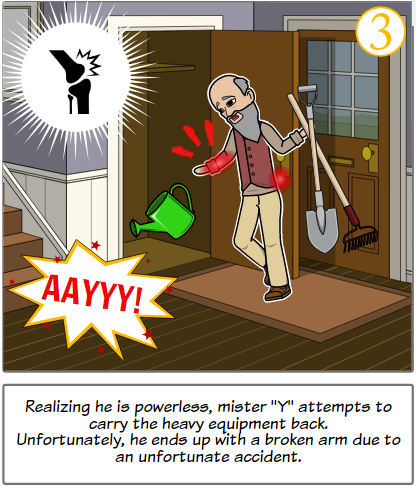
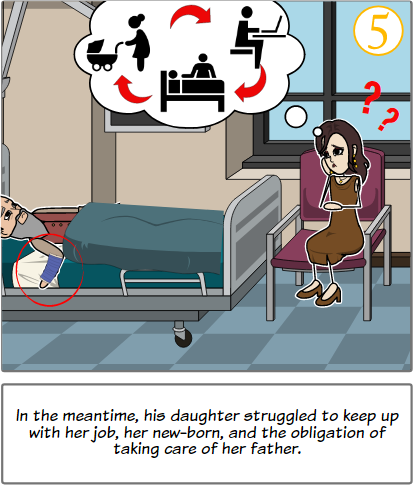
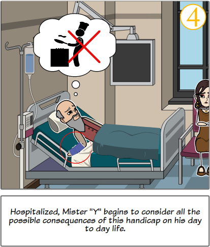
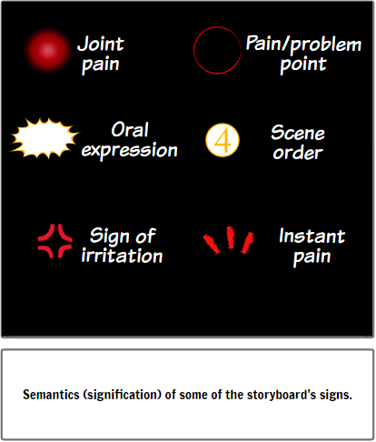

Problems Depiction Through Use Cases
About the experiment.
We are a design engineering team under the direction of Professor Bernard Yannou. We aim to run an experiment on how we can extract a complete and concise inventory of a user's problems, illustrated in a storyboard. We try through this experiment to give insights about solutions for a better state of living for users by depicting their daily tangible and potential problems.
CONTINUE READING
Nonetheless, the expression of "extracting user's problems" seems as much promising as ambiguous, doesn't it? so, what do we mean exactly by extracting or depicting painful situations?
It means capturing information and explicit it. How? you just need to read the storyboard. Focus on each scene which represents a single painful situation. By clicking on the link below each scene you will be forwarded to a form that displays the pain-model to follow. Each form presents multiple questions with prior definitions or/and instructions. Reading the definitions is obligatory to avoid errors during your mission of extracting the components of the illustrated painful-situations. By the way, you have a tutorial video above that explains through a simulation the process of running this test ;) Feel free to regain that panel whenever you feel the urge of getting more clarifications!
Encoding Scene 1
click on the link above to take the first test Encoding Scene 3
click on the link above to take the third test Encoding Scene 5
click on the link above to take the fifth testEncoding Scene 2
click on the link above to take the second test Encoding Scene 4
click on the link above to take the fourth test Please check the above-signification of all the graphic symbols used in the storyboard. These symbols are crucial in understanding the illustarted situations.
Research Team.
Do you want to know us more?
We are from design engineering department in CentraleSupelec in Paris under the direction of Professor Bernard Yannou. In our department we seek to diagnose, model, analyze, simulate and optimize complex systems through engineering & research. We view "complex systems" as a vast word that could include socio-technical systems, products/services, Processes, Humans...
Our resaearch team is thoughtfully implicated in the process of "a better living" designs.
Bernard Yannou
Professor of Design Engineering and Director of the Industrial Engineering Research Department (Laboratoire Génie Industriel, LGI) at CentraleSupélec.
Flore Vallet
Researcher at the Institut de Recherche Technologique SystemX, and associate researcher at the Laboratoire Genie Industriel at CentraleSupélec.
Rim Chouchene
Graduated student from Design Engineering Master at CentraleSupélec, and Mechanical Engineering at National engineering school of Monastir, Tunisia.
Contact & Feedback.
Do you want to participate in improving the pain-model? Fill out the form and fill us in with the details :) We love receiving new nudges and refreshing viewpoints or critics!